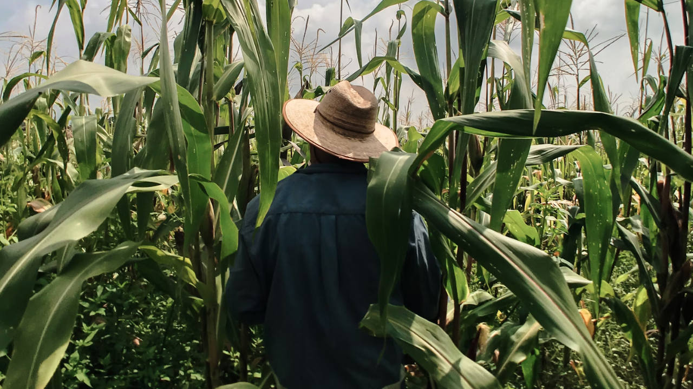

Diritti culturali: perché tutelare la diversità culturale è una priorità globale
La diversità culturale è una forza, non un folklore
Quando si parla di diversità culturale, spesso si pensa a danze, abiti tradizionali o cucine esotiche. Ma ridurre la cultura a una performance folkloristica significa ignorare il suo potenziale trasformativo.
La diversità culturale è una risorsa sociale, economica e creativa: favorisce l’innovazione, arricchisce la convivenza e genera valore. Secondo l'UNESCO, il settore culturale e creativo rappresenta il 6,2% dell’occupazione globale e il 3,1% del PIL mondiale.
Tuttavia, gran parte di questa ricchezza è invisibile e poco protetta.
Cos’è un diritto culturale (e perché è così importante)
I diritti culturali fanno parte dei diritti umani, come sancito dalla Dichiarazione dell’UNESCO del 2001 sulla Diversità Culturale. Ma nella realtà dei fatti, questi diritti sono ancora spesso ignorati o subordinati agli interessi economici e politici.
Questo si traduce in:
- Pratiche spirituali o rituali perseguitate
- Lingue indigene a rischio estinzione
- Saperi ambientali tradizionali esclusi dalle politiche pubbliche
Quando la cultura viene sfruttata senza essere riconosciuta o protetta, interi patrimoni viventi vengono marginalizzati.
Cosa succede quando manca il dialogo interculturale
L’89% dei conflitti nel mondo avviene in Paesi con basso dialogo tra culture. Tre conflitti su quattro hanno una dimensione culturale.
Dati che mostrano quanto il riconoscimento reciproco, il rispetto e la pari dignità tra culture siano alla base non solo della pace, ma anche dello sviluppo sostenibile.
MONDIACULT e la Dichiarazione per la Cultura
Nel 2022, 150 Stati hanno firmato a Città del Messico la Dichiarazione per la Cultura, affermando che la cultura è un bene pubblico globale e chiedendo che venga riconosciuta come obiettivo autonomo dell’Agenda ONU post-2030.
Questa dichiarazione propone di:
- Integrare la cultura nelle politiche di sviluppo
- Promuovere i diritti culturali, artistici e linguistici
- Proteggere il patrimonio materiale e immateriale
- Regolare la presenza della cultura nel digitale
Il prossimo appuntamento sarà il MONDIACULT 2025 a Barcellona, un evento cruciale per verificare i progressi e rilanciare gli impegni internazionali.
Cosa possiamo fare (come individui e società)
Servono politiche pubbliche forti e inclusive che tutelino i diritti culturali di tutte e tutti. Ma anche noi, come cittadini, possiamo contribuire:
- Ascoltando e valorizzando storie diverse dalla nostra
- Supportando la cultura indipendente e le espressioni minoritarie
- Usando la nostra voce per chiedere giustizia culturale
Come ricorda Polymita: "Parlarne è il primo passo per proteggere la diversità culturale".
Fonti e approfondimenti
- UNESCO, Dichiarazione Universale sulla Diversità Culturale (2001)
- Dichiarazione MONDIACULT 2022, Città del Messico
- Giornata Mondiale della Diversità Culturale per il Dialogo e lo Sviluppo – 21 maggio
- “La cultura come bene pubblico globale”, Polymita.it
- Report UNESCO su cultura e sviluppo sostenibile
Hai mai pensato alla cultura come a un diritto da difendere?
Ricerca a cura di Sofia Porceddu